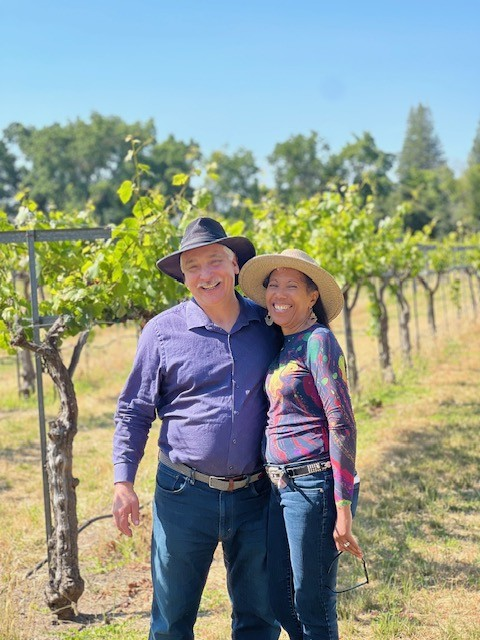

About the Experience
[ Client description will be inserted here. ]
Meet Your Hosts

JB Wine Adventures was founded by Joy Foster and Brian Muerle, a husband-and-wife team who have shared a passion for wine, travel, and exceptional experiences for over two decades. Their journey began with a serendipitous first Christmas together—each gifting the other the same vintage from Louis Jadot—a moment that set the tone for a life centered around discovery and connection.
Joy, a retired physician, and Brian, a retired industrial safety administrator, bring a thoughtful, detail-oriented approach to every experience they curate. Together, they have explored 27 countries across five continents, immersing themselves in the world’s most celebrated wine regions.
Both WSET certified and passionate home cooks, Joy and Brian blend deep wine knowledge with a love of food, culture, and hospitality—creating elevated, intimate journeys designed for discerning travelers.